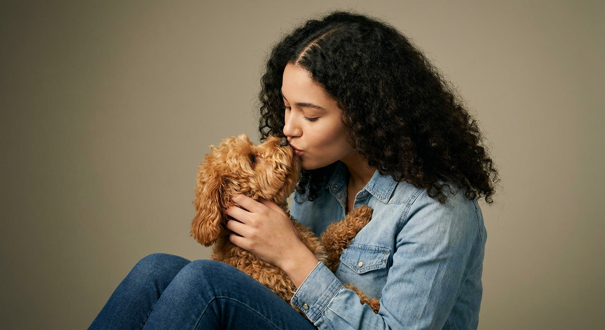
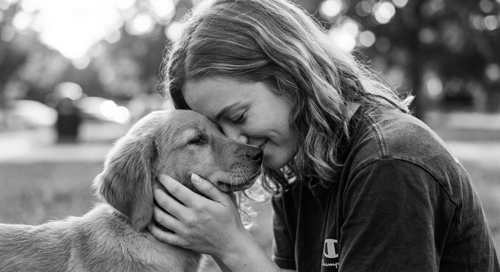
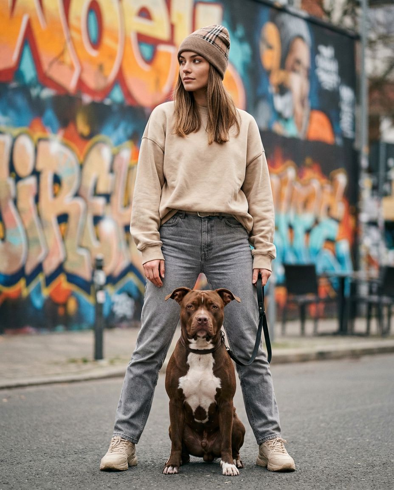
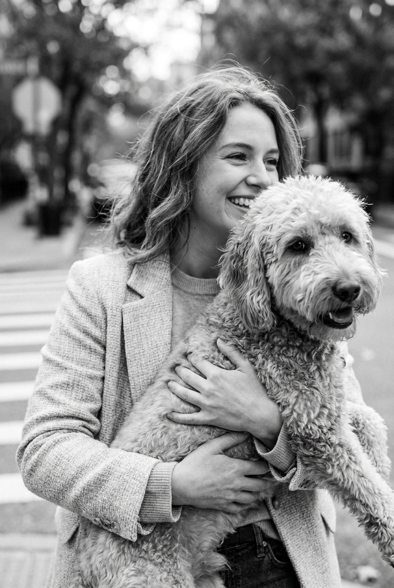
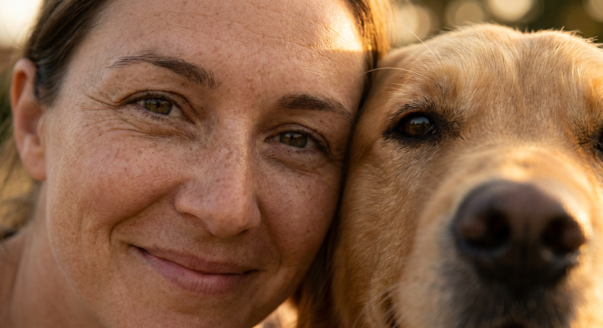
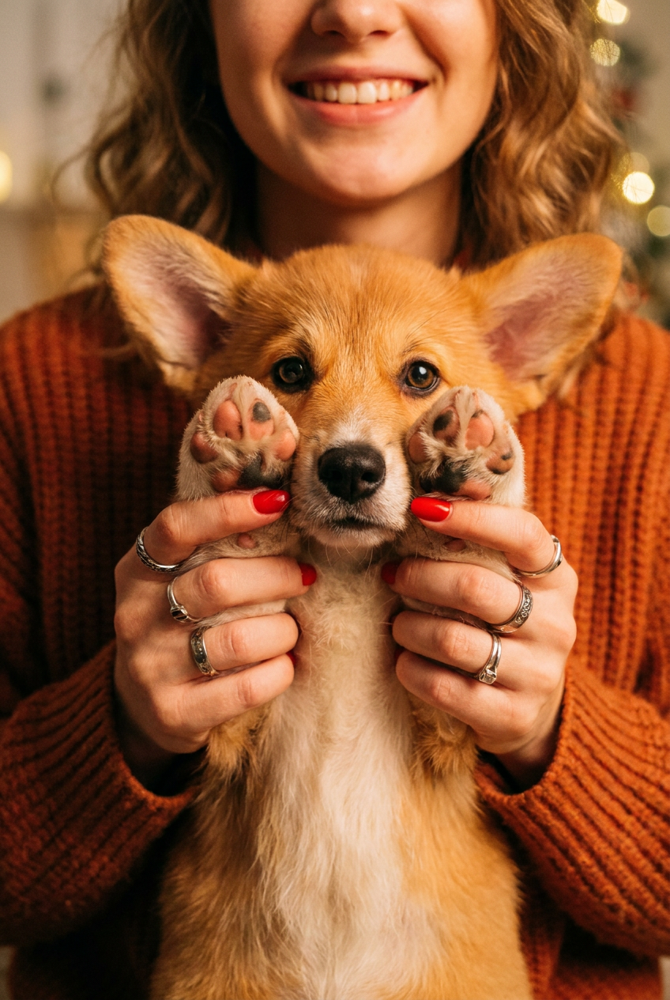
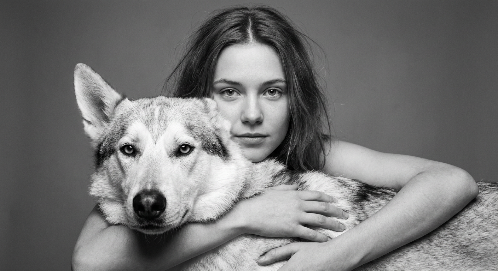
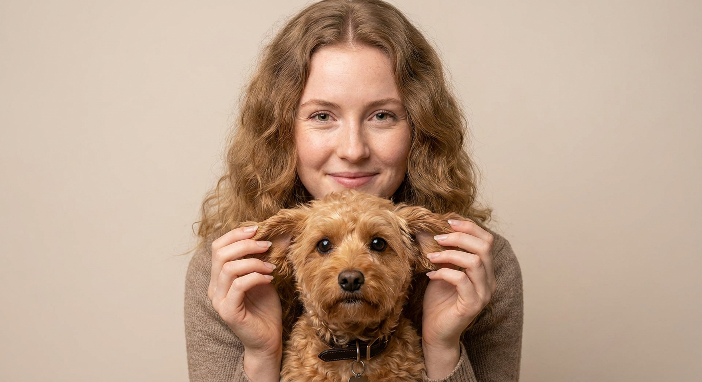
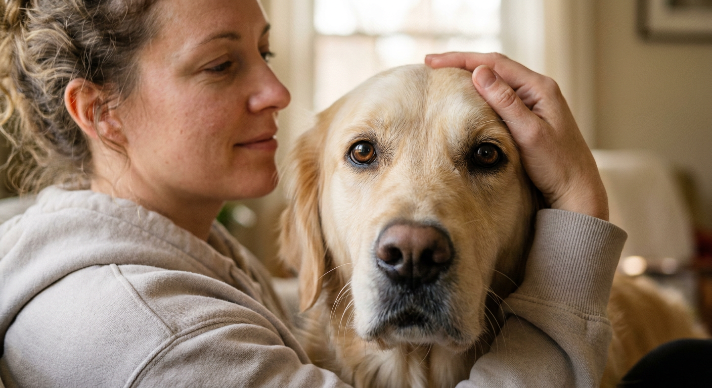
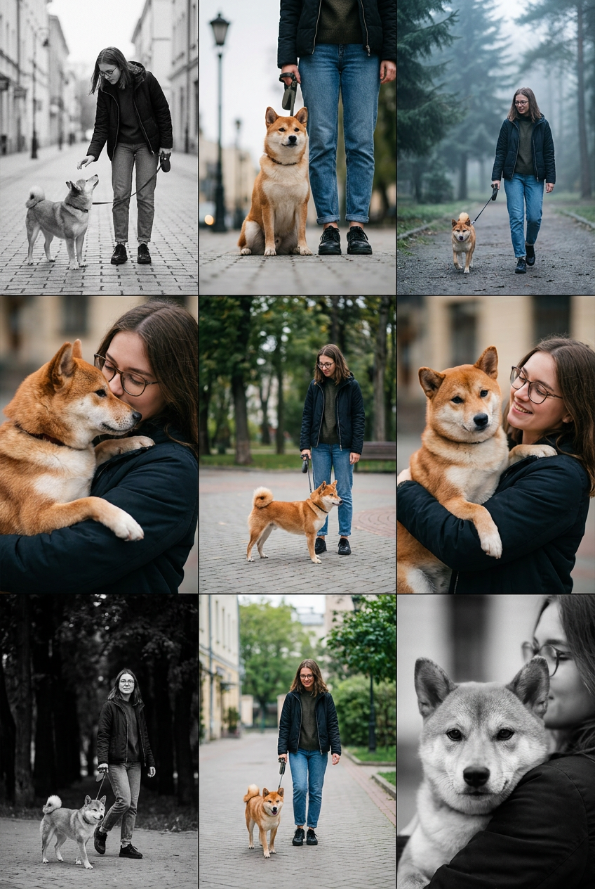

ИИ-фото с собакой: 10 промптов для нейросети

Обычный снимок с собакой не всегда передаёт близость, характер и настроение момента: питомец отворачивается, свет портит лицо, а кадр выглядит случайным. Генерация помогает заранее собрать нужную сцену — от нежного поцелуя в шерсть до прогулки у стены с граффити.
В подборке — 10 промптов для разных сюжетов: студийные и домашние портреты, чёрно-белые снимки, street-fashion, экстремальный крупный план и серия из девяти кадров. Каждый текст можно использовать как основу и затем менять породу, одежду, фон или цветокоррекцию.
Как сгенерировать такое фото: пошагово
Нужен снимок анфас при ровном свете, лицо в кадре целиком, без тёмных очков и головных уборов. Разрешение от 1000 пикселей по короткой стороне. Чем чётче исходник, тем точнее модель повторит черты.
Выберите сценарий ниже и нажмите «Копировать» — текст уйдёт в буфер целиком, вместе с командой сохранения внешности. Эта команда стоит первой строкой и отвечает за то, чтобы на выходе было ваше лицо, а не случайное.
Кнопка «Сгенерировать» рядом с каждым промптом открывает модель в новой вкладке. Nano Banana Pro работает с референсом лица — в отличие от моделей, которые генерируют портрет с нуля и узнаваемость теряют.
Промпт — в поле ввода, портрет — через загрузку референса. Порядок значения не имеет, но без референса команда сохранения внешности работать не будет: модели нечего сохранять.
Для сторис и ленты берите 9:16, для превью и обложек — 4:3. Первый результат редко идеален: если поза или свет ушли не туда, поправьте соответствующую часть промпта и запустите заново. Обычно хватает двух-трёх итераций.
10 промптов для генерации
1. Нежный студийный портрет
Строго сохранить внешность по загруженному референсу: черты лица, пропорции, мимику и текстуру кожи без изменений. Фотореалистичный студийный портрет молодой женщины с объёмными локонами и пробором почти по центру. Она сидит или полусидит, корпус развёрнут вправо, а голову поворачивает влево. К груди женщина бережно прижимает маленькую собаку с рыжевато-каштановой, золотисто-коричневой шерстью teddy-bear-типа: плотные мягкие кудри, плюшевая фактура, хорошо видны уши и мордочка. Женщина касается носом головы питомца, словно целует шерсть; глаза опущены или почти закрыты, выражение лица спокойное и очень нежное. Собака занимает левую часть кадра, около 35–45% ширины, женщина — правую, 55–65%. Руки обхватывают животное снизу и сбоку, пальцы полностью видны и анатомически правильны. На женщине светло-голубая джинсовая рубашка или жакет с заметными швами, металлическими пуговицами, воротником и планкой, а также тёмно-синий или сине-чёрный деним. Мягкий студийный свет, естественные пропорции, высокая детализация ткани и шерсти, вертикальный кадр, объектив 85 мм, f/2.
2. Лоб ко лбу на прогулке

Строго сохранить внешность по загруженному референсу: черты лица, пропорции, мимику и текстуру кожи без изменений. Фотореалистичный чёрно-белый outdoor lifestyle-портрет крупным планом, камера на уровне лица. Молодая женщина с волнистыми волосами и пробором ближе к центру наклоняется вперёд и прижимается лбом к собаке. Её лицо слегка уходит в полурезкость, глаза закрыты или полуприкрыты, на губах мягкая улыбка. На ней тёмная футболка с заметным принтом или логотипом на рукаве; ткань немного помята, складки выглядят естественно. В правой нижней части кадра находится коренастый щенок малой или средней породы, по типажу похожий на ретривера или спаниеля. Шерсть короткая, тёплого светло-рыжего, кремового или бежевого оттенка, нос темнее, на морде небольшие затемнения. Морда питомца прижата одной стороной к лицу женщины, взгляд направлен чуть в сторону, пасть закрыта. Передать тонкую текстуру шерсти, усов и влажного носа. Close-up, реалистичные лица, мягкий естественный уличный свет, умеренная глубина резкости, плёночная монохромная обработка.
3. Граффити и городской стиль

Строго сохранить внешность по загруженному референсу: черты лица, пропорции, мимику и текстуру кожи без изменений. Фотореалистичный street-fashion-портрет в полный рост: молодая женщина стоит на городской улице перед стеной с яркими граффити, крупными буквами и рисунками. Фон заметно размыт, но сохраняет насыщенные тёплые и холодные цвета. Ноги слегка расставлены, вес перенесён на одну, корпус ровный. Голова повёрнута влево, взгляд уходит в сторону, выражение уверенное и спокойное. Камера расположена на уровне середины роста или немного ниже, динамичная перспектива, ощущение candid-съёмки. На женщине клетчатая бини или кепка бежево-коричневого оттенка, слегка сдвинутая набок; свободный песочный свитшот с длинными рукавами и видимыми швами; серые прямые джинсы с естественными складками и заметной зоной ремня; тёплые бежевые кроссовки или ботинки с выразительной подошвой. Руки расслабленно опущены или немного согнуты, одна находится рядом с поводком. Рядом стоит собака коренастого типа, поводок натянут естественно. Вертикальный кадр, объектив 35 мм, f/2.8, реалистичные материалы и свет.
4. Винтажный кадр на руках

Строго сохранить внешность по загруженному референсу: черты лица, пропорции, мимику и текстуру кожи без изменений. Вертикальный фотореалистичный чёрно-белый портрет в духе street candid и плёночной фотографии. Добавить лёгкое зерно, мягкий контраст, естественную фактуру кожи и шерсти. Молодая девушка стоит на улице, камера находится примерно на уровне груди или талии, слегка снизу относительно её лица. Девушка расположена слева и в центре кадра, видна по пояс, обеими руками крепко держит собаку, словно та сидит у неё на руках. Питомец выходит на передний план: его голова занимает нижнюю правую и часть центральной области, морда повернута к объективу и немного влево, глаза чётко видны. Голова собаки частично перекрывает лицо девушки; она смотрит в сторону от камеры и широко улыбается. У животного реалистичная шерсть, выразительные глаза, естественная форма носа и ушей. Руки девушки поддерживают корпус снизу, ладони и предплечья видны без анатомических искажений. Фон городской, нейтрально размытый. Эффект документального снимка, объектив 50 мм, f/2.8, умеренная глубина резкости.
5. Почти касание объектива

Строго сохранить внешность по загруженному референсу: черты лица, пропорции, мимику и текстуру кожи без изменений. Экстремально близкий фотореалистичный портрет с эффектом почти физического контакта с объективом. Лицо молодой девушки занимает левую часть кадра, примерно 55–60% ширины, и обрезано от верхней линии волос или виска до губ: подбородок и шея почти не попадают в кадр. Главный фокус — на её глазах, особенно на ближайшей радужке, с точными бликами и детальной текстурой кожи. Справа находится голова собаки, около 40–45% ширины изображения. К объективу ближе правая сторона головы питомца: видны глаз, веко, переносица и часть щеки. Морда очень близко к камере, поэтому нижний правый угол перекрыт шерстью и частично уходит в мягкую нерезкость. Фон почти отсутствует, композиция построена на лицах и фактурах. Максимально детализировать ресницы, радужку, нос, короткие волоски и шерсть. Near camera, extremely close-up, shallow depth of field, объектив 100 мм, f/1.8, естественный мягкий свет.
6. Тёплая улыбка и корги

Строго сохранить внешность по загруженному референсу: черты лица, пропорции, мимику и текстуру кожи без изменений. Фотореалистичный домашний lifestyle-портрет крупным планом в тёплом вечернем свете. Молодая девушка наклоняется к щенку; в кадре видна главным образом нижняя половина её лица и улыбка, глаза частично скрыты и не являются центром композиции. Волосы слегка волнистые, выражение заботливое, словно снимок сделан в живой момент общения. На девушке объёмный вязаный свитер рыжевато-оранжевого или терракотового оттенка, хорошо заметны крупная вязка, мягкие волокна и естественные складки. В центре находится маленький пушистый щенок корги с реалистичной анатомией. Шерсть рыжая, вокруг глаз и на носу присутствуют характерные тёмные участки, нос тёмный, глаза карие и выразительные. Пасть может быть слегка приоткрыта, но без неестественной улыбки или деформаций. Уютная домашняя атмосфера, cinematic warm color grading, мягкие тени, shallow depth of field, фокус на глазах и морде щенка, объектив 85 мм, f/1.8.
7. Собака на переднем плане

Строго сохранить внешность по загруженному референсу: черты лица, пропорции, мимику и текстуру кожи без изменений. Чёрно-белый фотографический портрет с мягким студийным светом сверху и спереди. Молодая девушка с немного растрёпанными волосами и центральным пробором стоит в центре и держит собаку горизонтально на руках. Питомец находится прямо на переднем плане: его крупная морда и глаза занимают центральную область и остаются идеально резкими. Типаж собаки — лайка или волчья собака, бело-серая шерсть с тёмной маской на морде, заметными ушами и аккуратным крупным носом; отдельные волоски прорисованы подробно. Голова животного расположена ниже лица девушки и частично закрывает её грудь и руки. Ладони и предплечья девушки мягко видны по бокам, поддерживая корпус снизу. Её лицо чуть отодвинуто назад, взгляд прямо в камеру, выражение спокойное и естественное. Нейтральный серый однотонный фон слегка размыт, боке минимальное. Реалистичные пропорции, без лишних пальцев, объектив 70 мм, f/3.2, вертикальная композиция.
8. Рыжий питомец за уши

Строго сохранить внешность по загруженному референсу: черты лица, пропорции, мимику и текстуру кожи без изменений. Фотореалистичный студийный портрет на светлом фоне, фронтальная композиция по пояс. У молодой девушки очень светлая кожа, прямые или слегка волнистые волосы с объёмом у корней и пробором немного правее или левее центра. Она смотрит прямо в объектив и мягко улыбается; на лице видны естественные мимические морщинки. Перед грудью девушка держит маленькую или среднюю собаку. Обе руки подняты к уровню её ушей и аккуратно придерживают питомца, пальцы соприкасаются с шерстью без заломов и деформаций, ногти реалистичные. Главный объект — маленькая рыжая собака терьерного или пудель-микс-типа, например cavapoo: густая мелко-кудрявая шерсть тёплого золотисто-рыжего цвета, отдельные завитки и волоски тщательно прорисованы. Морда расположена в центре, глаза большие карие и выразительные, нос тёмно-коричневый или чёрный, пасть закрыта. На шее тёмный ремешок или ошейник. Мягкий ровный свет, высокая детализация, объектив 85 мм, f/4, светлый фон без лишних предметов.
9. Домашний профиль с ретривером

Строго сохранить внешность по загруженному референсу: черты лица, пропорции, мимику и текстуру кожи без изменений. Фотореалистичный интимный домашний close-up. Молодая женщина повернута влево, в кадре её профиль от верхней части головы до плеч. Волосы естественно вьются, хорошо видны ухо и линия роста волос. Женщина одета в мягкую домашнюю одежду или худи светло-серого либо бежево-серого цвета; ткань матовая, слегка ворсистая. Её лицо намеренно мягче и менее резко, чем собака, чтобы внимание оставалось на питомце. Крупная морда золотистого ретривера или ретривер-метиса занимает центральную область почти целиком. Окрас кремово-рыжий, золотистый, шерсть на морде короткая или средней длины, с подробной естественной фактурой. У собаки большие карие глаза с глубоким взглядом прямо в камеру и реалистичными бликами, крупный тёмно-коричневый или чёрный нос, вокруг него видны вибриссы и короткие волоски. Тёплый рассеянный свет из окна, спокойная домашняя атмосфера, shallow depth of field, фокус на глазах и носе собаки, объектив 85 мм, f/1.8.
10. Уличная история в девяти кадрах

Строго сохранить внешность по загруженному референсу: черты лица, пропорции, мимику и текстуру кожи без изменений. Создать вертикальный фотореалистичный фото-коллаж 3×3 из девяти отдельных кадров с одинаковыми промежутками, в формате contact sheet и серии уличных фотографий. Во всех сценах одна и та же молодая женщина: волосы то волнистые и собранные, то полураспущенные, в некоторых кадрах на ней очки; одежда casual — тёмная куртка или пальто, джинсы и удобная обувь, настроение спокойное и дружелюбное. Рядом во всех эпизодах одна собака корги или сиба-ину: коренастое телосложение, короткая рыжевато-коричневая шерсть, белая грудь, белые отметины на морде и лапах, стоячие уши, большие выразительные глаза, реалистичные нос и пасть. Верхний левый кадр сделать чёрно-белым: женщина в очках и тёмной одежде идёт по мощёной дорожке, держит поводок и непринуждённо взаимодействует с собакой; камера на уровне человека, мягкий контраст, candid-момент. В остальных восьми ячейках показать прогулку, ожидание у перехода, взгляд через плечо, игру с поводком, отдых на скамейке, движение рядом с витринами, крупный план морды и совместный уход вдаль. Единый реалистичный стиль, естественный свет, без изменения внешности героев между кадрами.
Что важно учесть в этом стиле
Собака должна быть описана не только породой, но и формой головы, длиной шерсти, окрасом носа и положением в кадре. Фраза «рыжая собака» даёт слишком широкий результат, а сочетание «коренастый корги, белая грудь, стоячие уши, короткая шерсть» заметно лучше удерживает образ.
Для портретов полезно задавать фокус, объектив и диафрагму: 85 мм и f/1.8 дадут мягкий фон, 35 мм подойдёт для улицы, а f/4 поможет сохранить резкость лица и питомца. Если руки или морда оказываются рядом с краем кадра, отдельно указывайте кроп и долю ширины каждого героя.
Идеи для вариаций
- Замените студийный фон на кухню с утренним светом или окно в дождливый день.
- Попробуйте зимнюю прогулку: пуховик, шарф, следы на снегу и пар от дыхания.
- Для драматичного результата добавьте вспышку, мокрый асфальт и неоновые вывески.
- Сделайте серию с разными возрастами собаки, но сохраните одинаковый ошейник и отметины.
- Поменяйте чёрно-белую обработку на тёплую плёнку, пастельные тона или контрастный журнальный цвет.
Как собрать свой промпт
Начните с формата кадра и точки съёмки: портрет по пояс, полный рост, профиль или extreme close-up. Затем опишите действие женщины и собаки, их положение относительно друг друга, выражения лиц и то, какая деталь должна быть в фокусе.
После этого добавьте внешность питомца, одежду, фон и свет. В финале задайте объектив, диафрагму, глубину резкости и ограничения: естественные руки, закрытая пасть, правильные уши, отсутствие лишних конечностей. Для стабильного результата закладывайте 4–8 генераций, а потом уточняйте только одну-две детали за раз.
Ошибки, из-за которых кадр не получается
- Слишком общий образ собаки. Без породы, окраса и фактуры шерсти питомец может менять вид от попытки к попытке.
- Не задана иерархия фокуса. Укажите, что должно быть резким: глаза собаки, радужка женщины или совместный портрет.
- Противоречивый свет. Не смешивайте вечернюю лампу, жёсткое солнце и студийный софтбокс в одной сцене.
- Нет описания рук. Если персонаж держит собаку, отдельно попросите анатомически корректные пальцы и естественную поддержку корпуса.
- Слишком много действий. Для одного кадра оставляйте один главный жест, иначе поза и направление взгляда распадаются.
Частые вопросы
Как сделать такое ИИ-фото бесплатно?
Можно начать с Kandinsky и Шедеврума: у них есть бесплатная генерация, но число попыток, скорость и доступные режимы меняются. Krea AI и Arena.ai позволяют тестировать разные модели, однако бесплатный доступ обычно ограничен очередью, кредитами или разрешением. Референс с собакой поддерживается не во всех режимах: иногда его можно загрузить только для image-to-image, а точное сохранение лица и питомца не гарантируется. Не используйте чужие фотографии без согласия.
Как сохранить одну и ту же собаку в серии?
Загрузите один качественный референс, где хорошо видны морда, уши и окрас, а в каждом запросе повторяйте ключевые признаки. Если сервис поддерживает seed, reference strength или image-to-image, фиксируйте seed и меняйте силу влияния постепенно. Полной идентичности между кадрами это не гарантирует.
Почему нейросеть искажает руки рядом с собакой?
Перекрывающиеся пальцы, шерсть и поводок создают сложную сцену. Уточните число рук, положение ладоней и контакт с мехом, а также добавьте запреты на лишние пальцы и деформации. Если ошибка повторяется, сначала сгенерируйте кадр без поводка, украшений и сложного кропа.
Как получить реалистичную шерсть и глаза?
Опишите длину шерсти, отдельные волоски, вибриссы, влажный нос и естественные блики в глазах. Для портрета задайте shallow depth of field, но оставьте глаза в зоне резкости. Слишком сильное размытие и стилизующие слова вроде «мультяшный» быстро убивают фотореализм.